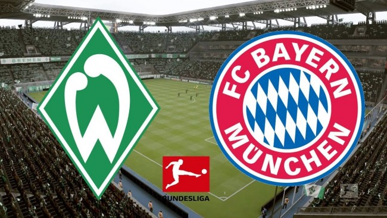

拜仁慕尼黑vs不萊梅 3:1
RBvs法蘭克福 1:1
狼堡vs礦工 5:0
法蘭克福vsRB 1:1
大黃蜂vs柏林 3:0
藥廠vs斯圖加特 1:2
柏林vs大黃蜂 0:3
斯圖加特vs藥廠 2:1
弗賴堡vs門興 1:3
門興vs弗賴堡 3:1
霍村vs科隆 3:1
科隆vs霍村 1:3
不萊梅vs拜仁慕尼黑 1:3
礦工vs狼堡 5:0
賽程積分
| 球隊 |
拜仁慕尼黑 |
RB |
狼堡 |
法蘭克福 |
大黃蜂 |
藥廠 |
柏林 |
斯圖加特 |
弗賴堡 |
門興 |
霍村 |
科隆 |
不萊梅 |
礦工 |
| 積分 |
58 |
54 |
48 |
44 |
42 |
40 |
38 |
36 |
34 |
33 |
30 |
30 |
29 |
22 |

https://bayernjunyou.github.io/football/lab/Lab_01.html